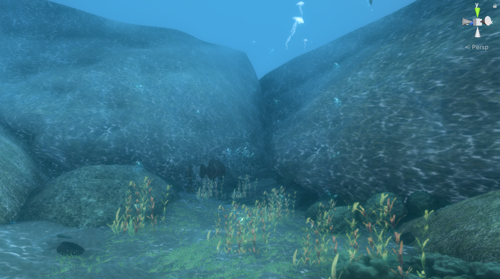

Projeto Virtual Mero Brasil
Motivação
O ambiente virtual mero foi idealizado pelo Projetos Meros do Brasil, em conjunto com o IFPR Campus Curitiba , este projeto visa informar sobre a ameaça de extinção do peixe Mero, um peixe que pode chegar a 2 metros e por este motivo era muito caçado, via um jogo de realidade virtual que seria colocado em museus para pessoas poderem ver como o Mero e na vida real e debaixo do mar.
Ambiente
O ambiente em que foi pensado para este jogo e usado de referencia foi o da costa rochosa paranaense, como o jogo sera mostrado em museus brasileiros e o mero pode aparecer na costa inteira brasileira e o jogo foi produzido no paraná pensamos que este seria o melhor ambiente para mostrar o jogo
Gameplay
Ao colocar o oculos de realidade virtual você se depara com o ambiente em sua volta e tambem que e um mergulhador, com o oculos você pode olhar em volta de você, e caso tenha um controle pode se movimentar, no caso inspirados para frente,tras, direita e esquerda dependendo de onde esta olhando